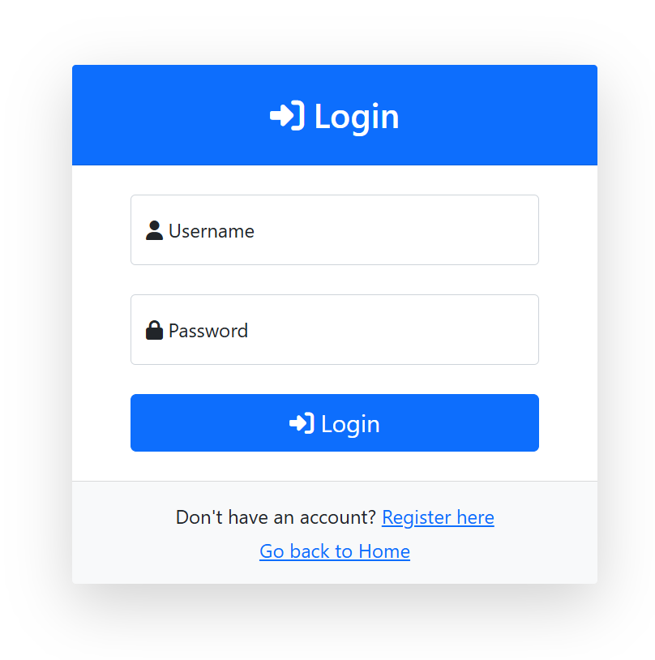
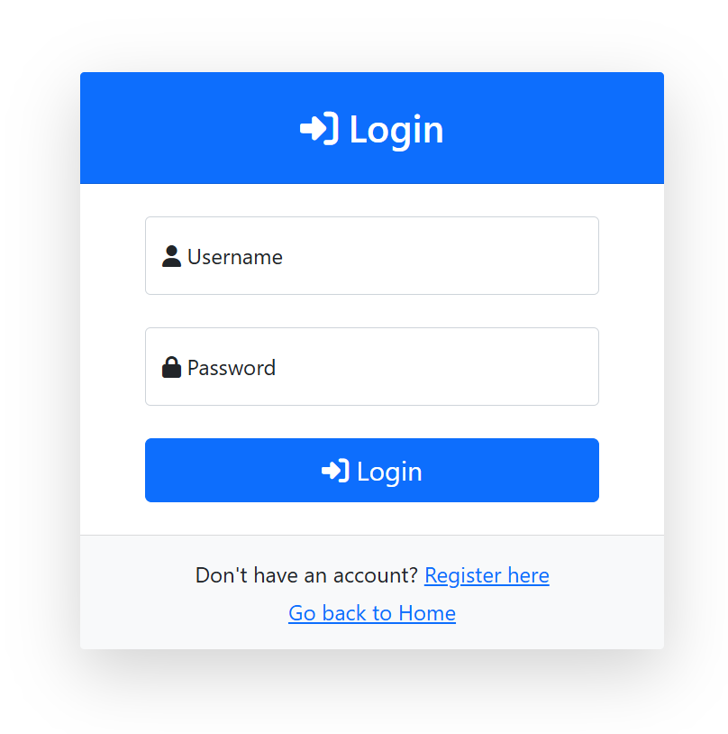

About the Project
This project is a robust Food Management Web Application built using ASP.Net Core. It streamlines food-related data management, featuring real-time error handling, secure authentication, and advanced filtering capabilities. The application is designed to prioritize scalability, reliability, and user experience.
Gallery
 



×

Detailed Project Description GitHub
Key Features and Modules
-
Authentication and User Management:
- Utilized scaffolding for authentication, enabling secure user sign-up and login functionalities.
- Integrated a role-based access control system for fine-grained permissions and data security.
-
Food Items Management:
- Implemented a comprehensive module for managing food items, allowing CRUD operations (Create, Read, Update, Delete).
- Developed filters to search food items by attributes like energy, fat, protein, and other nutritional values.
- Designed a dynamic user interface with dropdowns populated by food groups for ease of data entry and filtering.
-
Product Management:
- Built a detailed product module, linking food items with companies.
- Enabled filtering of products based on nutritional values (e.g., energy, fat, carbohydrates, sodium) and company affiliation.
- Implemented company-specific views for streamlined management.
-
Real-time Error Handling:
- Integrated Serilog for real-time logging and error monitoring.
- Captured application errors and performance data to improve system reliability and debugging efficiency.
-
Database and Data Persistence:
- Designed a normalized database schema using Entity Framework Core.
- Applied migrations for version-controlled database updates, ensuring a smooth development process.
- Introduced table relationships and navigation properties for seamless data handling.
-
User-friendly Frontend:
- Designed an intuitive interface using Razor Pages.
- Provided user-friendly forms for food item and product management with inline validation.
-
Unit Testing and Reliability:
- Followed the AAA (Arrange, Act, Assert) model for unit testing key components such as controllers and services.
- Ensured code quality and system reliability through automated tests.
-
Session Management:
- Developed session helpers to manage user-specific data like company affiliation, enhancing the user experience.
-
Advanced Filtering and Navigation:
- Implemented advanced search and filter functionalities for food items and products, enabling users to retrieve data based on specific criteria.
- Optimized performance for large datasets with repository patterns and asynchronous calls.
Technical Highlights
- Frameworks and Libraries: ASP.Net Core, Entity Framework Core, Serilog.
- Testing Tools: XUnit for unit testing, Moq for mocking dependencies during tests.
- Database: SQLite, with migrations for schema management.
- Frontend Technologies: Razor Pages and Bootstrap for responsive UI design. JavaScript and jQuery for client-side interactivity.
- Scalability: Modular architecture for easy maintenance and feature expansion.
Impact and Benefits
This application delivers a secure, user-friendly, and reliable solution for managing food-related data, showcasing skills in full-stack development and system reliability.